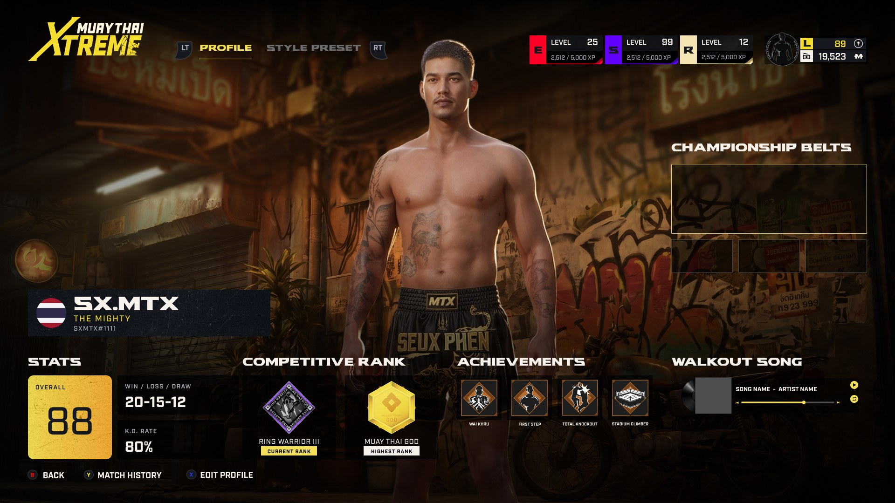

Liquid Transition
Toon puffs: a black body with a solid colour edge bubbles in from the origin, holds (logo), then carries on off the screen. Black fog and Full marble are the liquid styles. Profile → Match History. · Diamond Sweep demo

 Timeline 0.00
Timeline 0.00
Origin · numpad 1-9
Style
Colours